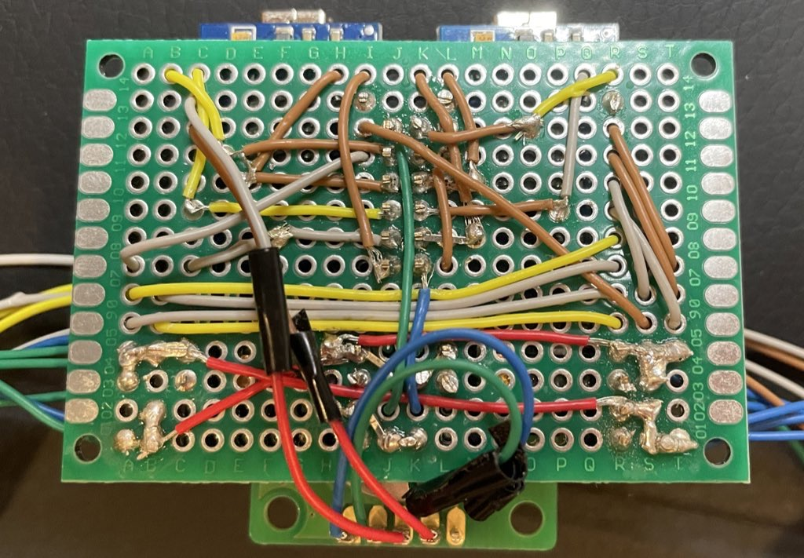
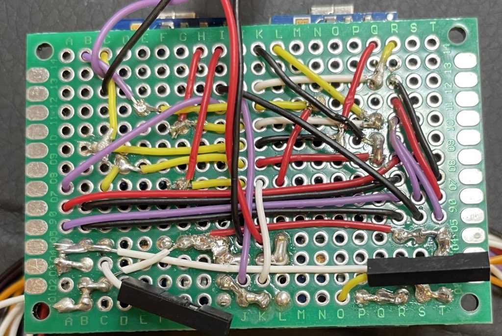
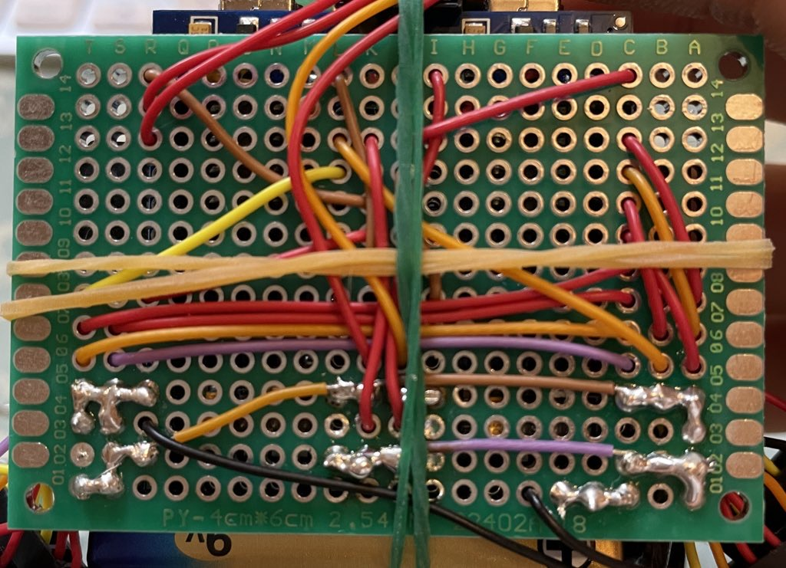

Hello!
ハムストリングの怪我の予測を可視化するウェアラブルデバイスの開発
・作成した計測装置を使用し、モデル構築のためのデータ計測
・計測したデータでモデル構築
・モデル構築以外にも実際に分析してみる
・この反復
・二週間前にようやく一台作成したが、色々あってその後二台作成した。
・その際の裏面の進化を掲載したい。

・配線が複雑で、ごちゃごちゃしているように見える。
・また配置が定まっておらず、接合部にテープを使用していて汚い。
・そのため二台目を作成した。

・ハンダの数が減り、私の精神的障壁が低くなった。
・電池の配線もした。
・しかし、シリアルモニターで動きの様子を観察していたところ、落下。
・衝撃でarduino nanoのUSB差込口が壊れた。（USBは衝撃に弱いらしい）
・少し萎えたが、再び三台目を作成。ついでに作業風景も動画に収めた。

・すっごいシンプルになった。
・GNDや5Vをつなげる部分も、工夫してきれいになった。
・使用する際には問題はないのだが、もう少し長い方がいいなという
部分があったため、それは次に活かそうと思う。
・小平に倣って、作業風景をYouTubeに載せて見ました。
・撮影した理由は、壊れて萎えていたのでモチベを上げたかったからです。
＃サムネは自動設定
＃95倍速
＃BGM-ROA-Someday
・ちなみにしっかりフリー素材です。
課題はたくさんありますが、一つずつクリアしていきたいと思います。
千里の道も一歩からということで。
＃千里の道も一歩から
＃継続は力なり
Fin.